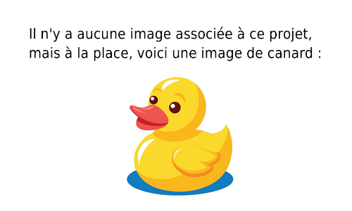

Base de données des élèves de l'IUT
Implémentation d'une base de données contenant les postulants et les élèves de l'IUT pour le DUT informatique.
Nous avons, en binôme, créés le script de création de la base, que nous avons ensuite peuplé.
l'objectif a aussi été dans un second temps de réaliser des études statistiques sur cette base.
Nous avons utilisé python pour normaliser les données et réaliser les études statistiques.
Technologies : SQL, python
Compétences : SQL, Développement Python, travail en équipe
